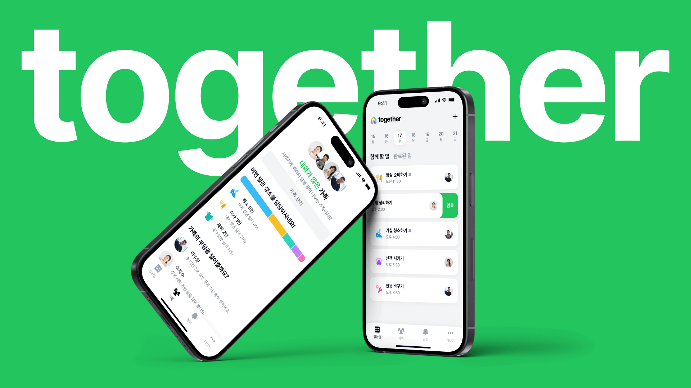
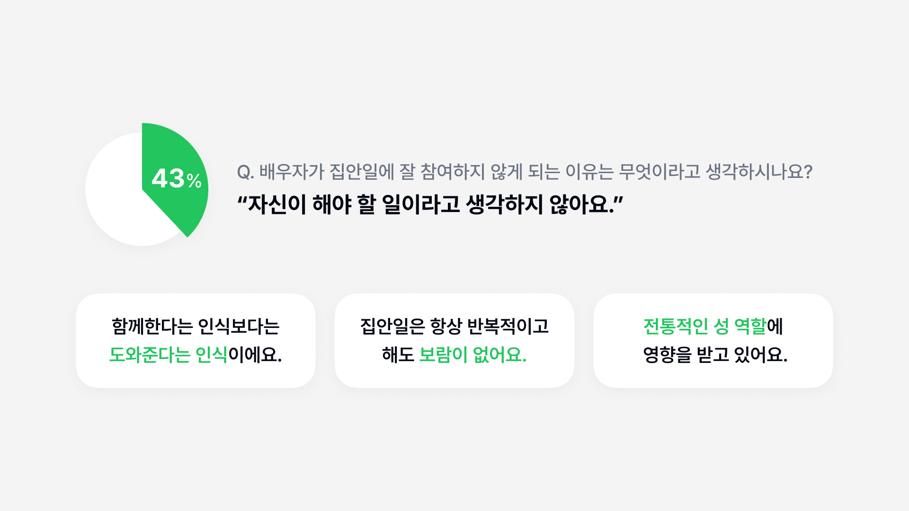
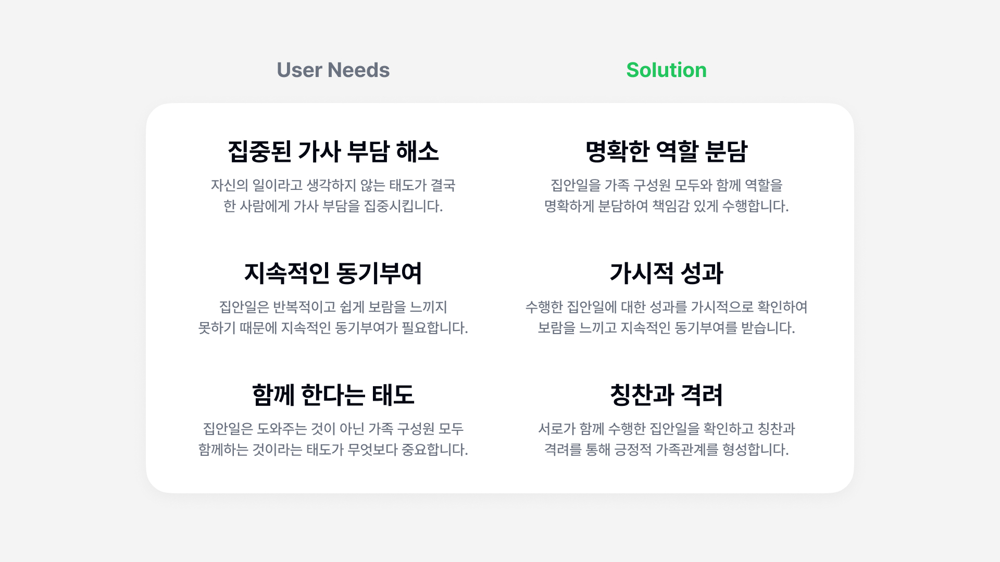
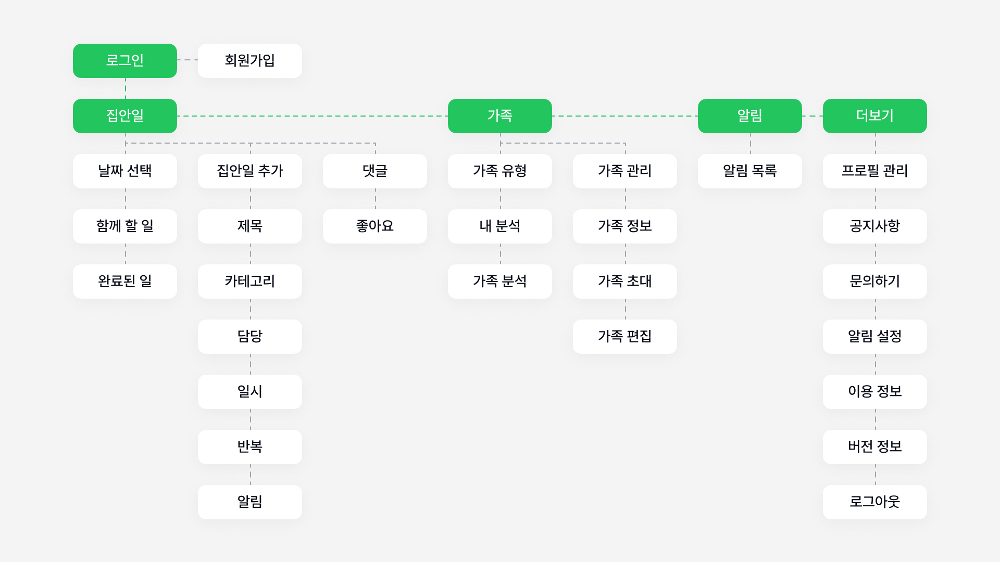
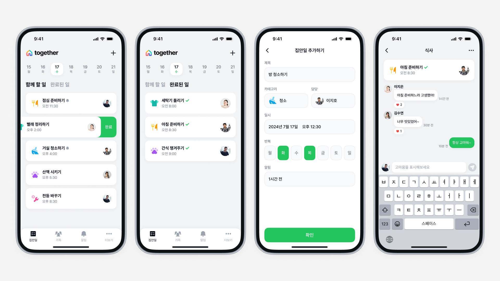
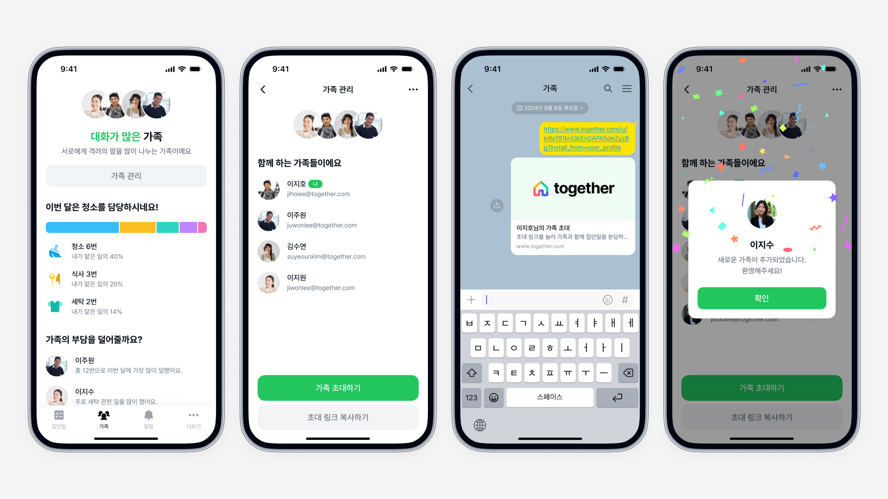

together는 가족 구성원이 집안일을 분담하고 함께 관리하며 소통하는 서비스입니다. 가족 간 가사분담 과정에서 나타나는 여러 문제들을 관찰하고 다양한 방법으로 인사이트를 찾아 이를 해결할 수 있는 서비스를 디자인했습니다.

인식과 달리 공평하지 못한 가사분담
가족 구성원 간의 가사를 공평하게 분담해야 한다는 인식은 점점 증가하고 있는 추세이지만, 실제로 가사분담을 공평하게 나누는 비율은 매우 적었습니다. 이로 인해 가족 간의 갈등이 계속해서 발생하고 있고, 특히 코로나19 이후 이러한 갈등은 더욱 심화되고 있습니다.
107명의 부부간 가사분담 설문조사
주인의식 부족과 동기부여의 부재
가사분담이 잘 이루어지지 않는 가정의 특징으로는 한 명에게 집안일이 집중되는 경향이 있었습니다. 집안일에 잘 참여하지 않는 배우자의 경우, 전통적인 성 역할에 따라 함께한다는 인식보다는 도와준다는 인식이 강했고 지속적인 동기부여 또한 없었습니다.

4명의 부부간 가사분담 인터뷰
공평한 가정일수록 역할을 정해서 전담
한 명이 주로 집안일을 담당하는 부부일수록 집안일을 가족구성원에게 수시로 요청하는 경우가 많았습니다. 반면 공평하게 분담하는 부부일수록 각자의 능력에 따라 역할을 정해서 집안일을 전담하는 비율이 높았습니다. 이러한 결과는 가사분담에 있어서 명확한 역할 분담이 중요하다는 것을 알 수 있습니다.
부부 별 가사분담 방법 비교
가장 중요한 것은 서로에 대한 이해와 공감
리서치 결과들을 분석하면서 가사의 여러 가지 어려운 점들과 태도의 중요성, 그리고 집안일을 효율적으로 수행할 수 있는 방법들을 알 수 있었습니다. 이러한 다양한 인사이트 중 가장 중요한 것은 상대방의 생각과 상황, 성향 등을 이해하고 이를 공감하는 자세였습니다.
리서치로 도출한 인사이트
가사 부담이 집중된 상황에서의 두 사용자 유형
한 명에게 가사 부담이 집중된 상황에 나타날 수 있는 두 가지 사용자 유형을 페르소나로 설정했습니다. 이 페르소나를 바탕으로 사용자 문제가 드러나는 시나리오를 구상하고 이때 나타나는 사용자 니즈를 서비스 컨셉에 적용시켰습니다.
두 가지 유형의 페르소나
명확한 역할 분담과 지속적인 동기부여
한 사람에게 집중된 가사 부담을 해소하기 위해 명확한 역할 분담을 서비스의 주요 컨셉으로 설정했습니다. 또 성과를 가시적으로 표현하고 가족 간의 칭찬과 격려를 통해 지속적인 동기부여와 함께 한다는 인식을 가질 수 있도록 했습니다.

서비스 컨셉과 방향성
가족 모두가 사용할 수 있는 단순한 서비스 구조
서비스의 사용자 범위를 가족 전체로 설정하여, 연령대와 IT 기기에 대한 친숙도에 관계없이 누구나 직관적으로 사용할 수 있도록 구조를 단순화했습니다. 또한, 설정한 서비스 컨셉을 효과적으로 표현할 수 있는 핵심 기능에 집중하여 설계했습니다.

서비스 정보 구조
집안일을 추가하고 완료 후 댓글 남기기
가족 구성원 누구나 본인을 포함한 서로의 집안일을 추가할 수 있고, 추가된 집안일은 모두에게 공유되어 명확히 역할을 분담할 수 있습니다. 집안일을 끝냈다면 간단한 제스처를 통해 완료로 전환할 수 있고 댓글을 작성하여 서로에게 칭찬과 격려를 표시할 수 있습니다.

집안일 추가와 완료 및 댓글
함께한 집안일을 확인하고 가족 관리하기
가족들이 함께 집안일을 끝냈다면 다양한 차트와 데이터를 보며 가시적으로 성과를 확인할 수 있습니다. 이를 바탕으로 가족 구성원은 지속적인 동기부여를 얻고 집안일에 대한 조율 또한 가능합니다. 함께하는 가족 역시 링크를 통해 쉽게 추가하고 관리할 수 있습니다.

가족 인사이트와 가족 관리
알림을 확인하고 프로필 관리하기
알림을 통해 가족의 집안일 추가 여부와 완료 여부, 댓글 등을 확인할 수 있습니다. 그 밖에도 서비스 내에서 사용되는 프로필을 관리하고 알림을 설정하는 등 서비스 이용에 필요한 다양한 기능을 함께 제공하고 있습니다.
서비스 알림과 프로필 관리
집안일에 대한 지속적인 관심
푸시 알림과 위젯 기능을 함께 제공하여 앱을 사용하지 않을 때에도 집안일에 대한 지속적인 관심을 유도했습니다. 이러한 관심은 곧 가족이 함께한다는 태도로 자연스럽게 이어져 가족 구성원이 집안일에 대한 책임감을 가질 수 있게 했습니다.
푸시 알림과 위젯
실제 인터뷰이들의 긍정적 기대
서비스를 통해 가사 부담을 완화하고 지속적인 동기 부여와 책임감을 가질 수 있도록 디자인했습니다. 디자인한 서비스를 실제 인터뷰를 진행했던 분들에게 보여드렸고, 모든 분들이 ‘만약 이 앱이 개발된다면 실제로 많은 도움이 될 것 같다.’라는 긍정적 피드백을 남겨주셨습니다.